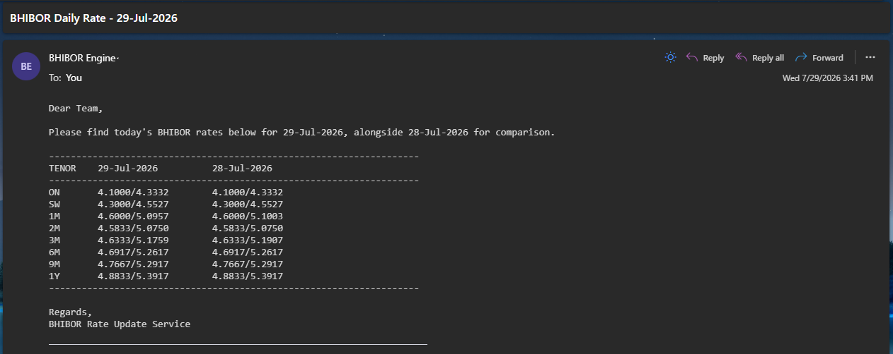
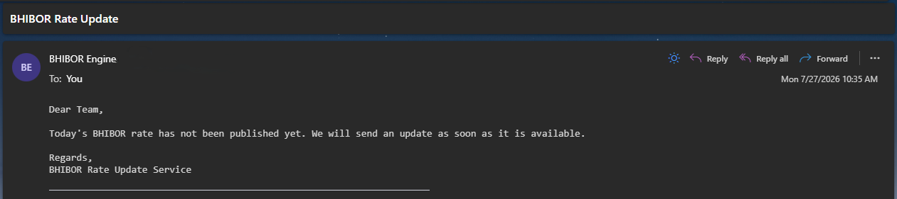
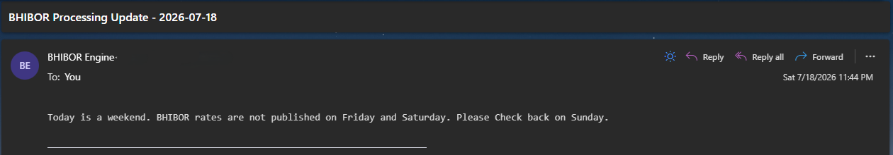

automation · C#
BHIBOR Rate Service
A Windows Service that collects and distributes daily interbank rates consistently, replacing repetitive manual reporting.

A dependable flow
The service handles scheduled collection and distribution in the background. I focused on clear operational behavior, consistent formatting, and documenting what should happen when a step needs attention.
Project focus
The project focuses on reliable daily distribution.


